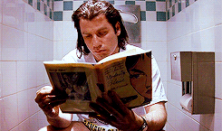

Welcome to Marturia's Reads!
Book Reviews
Almost every book I have read I have enjoyed immensely if not at least a little except the book Just Grace by Charise Mericle Harper.
This book series should burn in hell.
Book Blogs
Diverse Books
Book Recommendations/Misc.
- The Harry Potter Series
- Children of Blood and Home by Tomi Adeyemi
- The Sun is also a Star by Nicola Yoon
- Shadowshaper by Daniel Jose Older
- Frankenstein by Mary Wollstonecraft Shelley
- Narrative of the Life of Frederick Douglass, an American Slave by Frederick Douglass
- The Vagina Monologues (every volume)
- A Vindiction of the Rights of Women by Mary Wollenstoncraft
- Outliers by Malcolm Gladwell
- Guns, Germs, and Steel by Jared Diamond
- Feed by M.T. Anderson
- An African American and Latinx History of the United States by Paul Ortiz
- Living for Change by Grace Lee Boggs

Book Arts and Crafts
IDK go on youtube ¯\_(ツ)_/¯

About Me
I like reading, food, and THE ARTS!

Other Blog